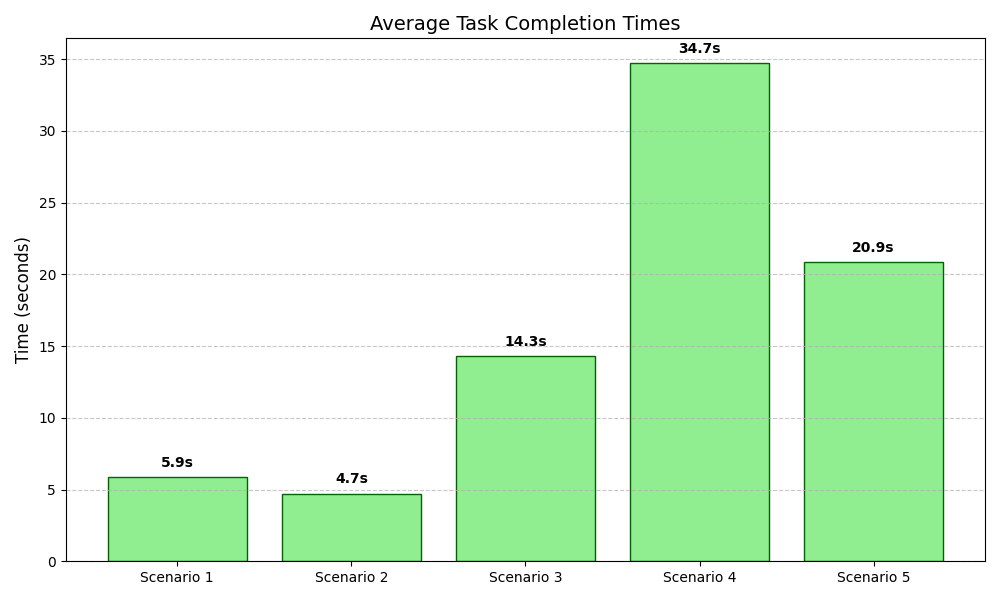

Usability Test Plan
This plan outlines the evaluation of the MoviLog Android application. By moving beyond simple instruction-based testing to goal-oriented scenarios, we aim to observe how naturally users interact with our movie management system.
1. Heuristic Evaluation (Pre-Test)
Prior to user testing, a team evaluation based on Nielsen’s 10 Heuristics identified the following areas of concern:
| Issue | Description | Heuristic | Severity | Recommendation |
|---|---|---|---|---|
| Navigation Flash | White screen flashes during screen transitions. | 1;8 | 2 | Fix background color consistency. |
| Stats Icon | Stats Icon can be easily confused with a "Profile" or "User" icon. | 4;6 | 2 | Redesign icon for clarity. |
| Filtering | Lack of genre/popularity filters makes browsing inefficient. | 7;3 | 3 | Implement genre-based filtering. |
| Error Handling | No feedback during API connection failures. | 9;5 | 4 | Add error pop-up and retry logic. |
| Heatmap Clarity | Visual data lacks labels and proper explaining. | 2;10 | 2 | Add a button which opens a more detailed explanation |
| List Control | Cannot remove items from the "watched list". | 3 | 3 | Add a "delete" function for "watched list" items. |
3. Hypotheses
- H1: Users can search for a movie and access details without assistance.
- H2: Users can create and manage movie lists efficiently.
- H3: Users can rate movies without confusion.
- H4: Users can navigate between the main sections of the interface without noticeable hesitation or navigation errors.
4. Study Design
Type: Descriptive usability study using a within-subjects design.
Participants: 6–8 users aged 18–30.
5. Tasks (Goal-Oriented Scenarios)
To simulate real-world usage, participants are given the following tasks:
"You just saw a trailer for the movie 'Inception' and want to know more about it. Find it in the catalogue."
"Now that you've found the movie, you want to know if you have time to watch it tonight. Find the duration (runtime) and the current user rating."
"You want to keep track of movies to watch on the weekend. Create a new personal list and name it 'Weekend Vibes'."
"You just watched 'Inception' and you decided that this movie is a good weekend movie add it to the list."
"Navigate to your stats page and explain to the moderator what you see."
6. Data Collection
- Quantitative: Task success rate, completion time, and error frequency.
- Subjective: System Usability Scale (SUS) scores.
- Qualitative: Observation notes and post-task interview feedback.
7. Test Procedure
- Introduction: Briefing the participant on the app's purpose.
- Demographics: Gathering demographics from participant.
- Pilot Test: Ensuring task clarity with a single initial participant.
- Main Test: Execution of the 5 scenarios listed above.
- Debrief: Completion of the SUS questionnaire and closing questions.
Expected Outcomes
The test aims to identify usability issues and validate heuristic findings.
Study Results
1. Differences: Pilot Test → Final Test (Placeholder)
We adjusted the Scenarios, so they are more clear
1.1 Example
"Navigate to your stats page, look at the heatmap and explain to the moderator what you see." ---> "Navigate to your stats page and explain to the moderator what you see."
2. Demographics
- Sample size: 7
- Age range: 18-26
- Gender distribution: 71.4% Male; 28.6% Female
- Movie consumption per month: Majority less than 5
3. Results
3.1 Task Completion Time
| Scenario | Mean Time | Median Time |
|---|---|---|
| Scenario 1 | 5.86 s | 6 |
| Scenario 2 | 4.14 | 5 |
| Scenario 3 | 14.29 | 12 |
| Scenario 4 | 34.71 | 31 |
| Scenario 5 | 20.86 | 16 |

Scenario 2: "Now that you've found the movie, you want to know if you have time to watch it tonight. Find the duration (runtime) and the current user rating."
Scenario 3: "You want to keep track of movies to watch on the weekend. Create a new personal list and name it 'Weekend Vibes'."
Scenario 4: "You just watched 'Inception' and you decided that this movie is a good weekend movie add it to the list."
Scenario 5: "Navigate to your stats page and explain to the moderator what you see."
3.2 System Usability Scale (SUS) (Placeholder)
MoviLog achieved a very high System Usability Scale (SUS) score of 89.29 (SD=6.41). The tight interval of [83.36, 95.21] indicates a high degree of certainty in the results. Even at the lowest end of the confidence interval (83.36), the system remains in the "Excellent" category.

5.3 Qualitative Feedback
Common positive comments:
- “Looks professional”
- “I like the design”
- “Searching for Movies is well integrated”
Common negative comments:
- “I would like to have a function where i can add Movies to lists even if i haven't watched the Movie yet”
- “The NavBar looks a bit boring”
- “The Heatmap on the Stats screen looks a bit confusing”
6. Conclusion
-
In conclusion, the usability study for MoviLog revealed that the application has exceptional user friendliness, evidenced by an "Excellent" System Usability Scale (SUS) score of 89.29. Participants specifically highlighted the professional design aesthetic and the seamless integration of the movie search functionality as major strengths of the platform. However, to further refine the user experience, the ability to add unwatched movies to custom lists, the visual appeal of the navigation bar, and the clarity of the statistics heatmap should be improved.
Final reflection
Jona Jožef Zeichen
With the final product now in front of me, I am very proud of us. The app works and feels smooth and professional. Yes, we could tweak one or two little things for sure to make it feel even better, but I am very happy with what we accomplished in these two weeks. Thinking back to the start, it was a very funny coincidence that Paul’s and my MC projects actually complemented each other very well in regards to what we wanted to build. He had the watchlist and I had a list with lists inside. We did start from scratch, but we knew how to tackle the structure and we got working results pretty fast. The biggest challenge was finding out how to talk to the database to not only get movies, but how to get movies that aren't NSFW and have a certain amount of ratings so that the search isn't cluttered with very obscure and 2 minute long movies. It was nice to again experience the CCL feeling of really working on something for a fixed time and getting a much better understanding of the tools we are using, in this case, Android Studio, Git, and Kotlin. So, all I can add at the end is that I had a lot of fun and am proud of the product.
Paul Hitzl
I am really proud of what we achieved with this project, and I think the app turned out very well. At the beginning, I honestly didn’t know how it would be possible to build something cool in just two weeks, especially because I wasn’t very confident using Android Studio. However, in the end, everything came together and the result is actually pretty impressive. For me, the hardest part of the project was embedding the API into the app and fetching all the data we needed. It took some time to understand how everything connects, but once it worked, it felt really rewarding and helped me learn a lot. I also really enjoyed working together as a team. We made fast progress, constantly found new things to improve, and kept building better and better versions of the app. That process was one of my favorite parts, seeing the app improve step by step and knowing that it actually worked. I really like the design of the app as well. Everything looks professional, and it’s easy and enjoyable to use. It would be great to have the app working on an iPhone too, so I could actually use it myself in everyday life.